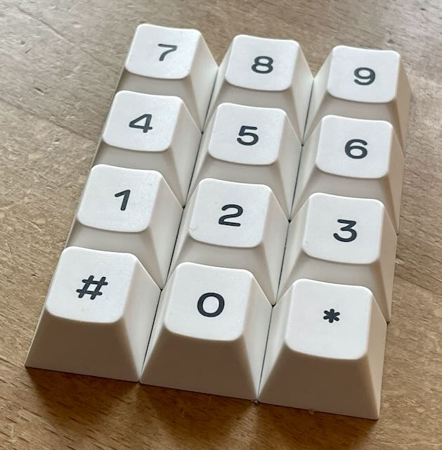
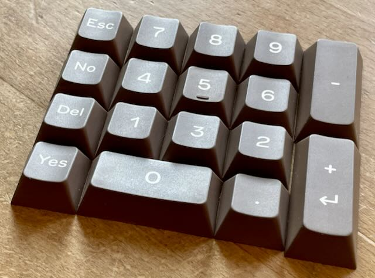
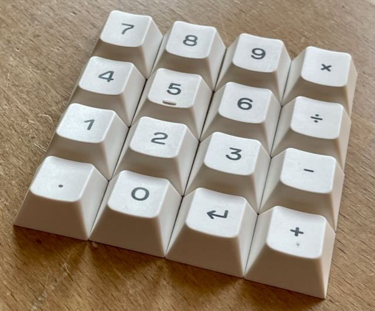
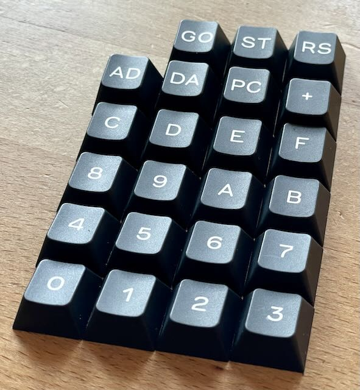
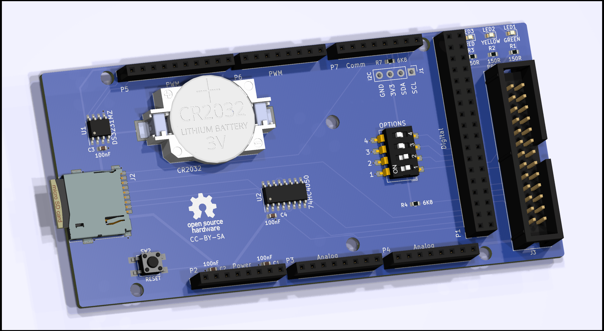

Vielleicht Später
Diese Projekte werde ich vielleicht später produzieren. Falls Interesse besteht, bitte melden, dann kann ich sie eventuell vorziehen.
Commodore
Commodore 64

Atari CX21 Keypad mit MX Tasten

Atari CX85 Keypad mit MX Tasten

Cardco Cardkey 1 Keypad mit MX Tasten
Meatloaf IEC Multidevice Emulator
SuperPad64 / Ninja SNES Pad
Commodore 16, Plus/4
Meatloaf IEC Multidevice Emulator
MOS KIM-1

Keypad mit MX Switches

SD Card Shield
Andere Heimcomputer
Atari 8-Bit
Atari CX21 Keypad mit MX Tasten
Atari CX85 Keypad mit MX Tasten
Altair 8800
I/O Bus Backplane
Bus Backplane für Altair 8800 Mini.
I/O Diskcontroller
I/O Drucker
I/O Parallel
Kassettencontroller Karte
Serielle Schnittstelle
Sprachprozessor
Spielekonsolen
Atari 2600
Atari CX21 Keypad mit MX Tasten
Moderne Geräte
Computer